set.seed(101)
u<-runif(1000, min=10, max=30)
hist(u)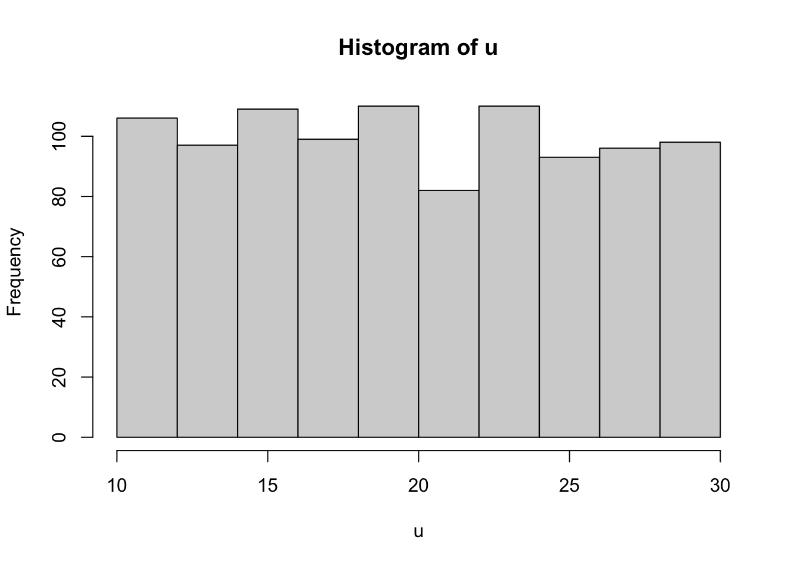
There are many built-in distribution functions in R, some of which are often used for theorizing a population. Each distribution function can be depicted or generated with 4 similarly prefixed R function: d...() followed by function name for the density of probabilities, p...()for the cumulative probability, q...() for quantiles, and r...() to generate numbers from the distribution. We first demonstrate those for two important continuous distributions that we have already used: the uniform and the normal distributions.
The uniform distribution is one of the simplest distribution of a continuous (ratio or interval) variable. Although it is rare in practice that each value along a continuum has the same chance of occurring than all others, it is a base distribution to know of and the source of generating random numbers.
Each value has the same probability of occurrence. It is a simple case through which we show how we can compute density, probabilities and cumulative distributions functions in R.
A random variable \(X \in [a;b]\) following an uniform distribution, can be expressed as: \(X \sim U[a;b]\), with expectation \(E(X) = \dfrac{a+b}{2}\) and variance \(Var(X) = \dfrac{(b-a)^2}{12}\).
Math note: The denominator, 12, of the variance may seem a little surprising, but results from an integration. Indeed, the variance is the expected value of the squared deviations to the mean. You thus integrate the squared difference between each point \(X\) and the mean, which itself is \((a+b)/2\), over the interval \([a, b]\), that is integrating \(((X-(a+b)/2)^2)/(b-a)\), leading to the above defined \(Var(X)\).
To generate empirically a uniform function, we feed the runif() function with a number of observations and a range, i.e. a minimum value (default \(a=0\)) and a maximum value (default \(b=1\)).
set.seed(101)
u<-runif(1000, min=10, max=30)
hist(u)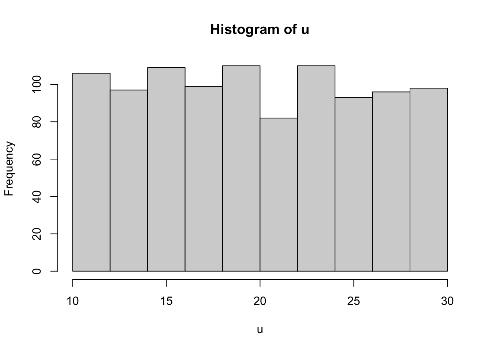
The histogram shows that each value (interval of values) is similarly frequent.
Instead of a histogram, or on top of it, we often plot densities, which is a smoother representation than the bars. The computation uses a local density (kernel density i.e. using a bandwidth instead of the strict silos of the histogram). Beyond the visual, the notion of density is important because, once it is scaled so that the entire area under the curve sums to 1, it is interpretable as a probability.
In R in order to compute the density for an empirical distribution, we use the density() function and use its returned values for plotting. Note that we don’t have frequencies anymore along the y-axis, but values below 1, i.e. probabilities. This is also why plotting the density on top of a histogram requires further fine tuning (which we leave out for now).
density(u)
#>
#> Call:
#> density.default(x = u)
#>
#> Data: u (1000 obs.); Bandwidth 'bw' = 1.316
#>
#> x y
#> Min. : 6.06 Min. :7.237e-05
#> 1st Qu.:13.03 1st Qu.:1.876e-02
#> Median :20.00 Median :4.731e-02
#> Mean :20.00 Mean :3.581e-02
#> 3rd Qu.:26.96 3rd Qu.:5.010e-02
#> Max. :33.93 Max. :5.278e-02
plot(density(u))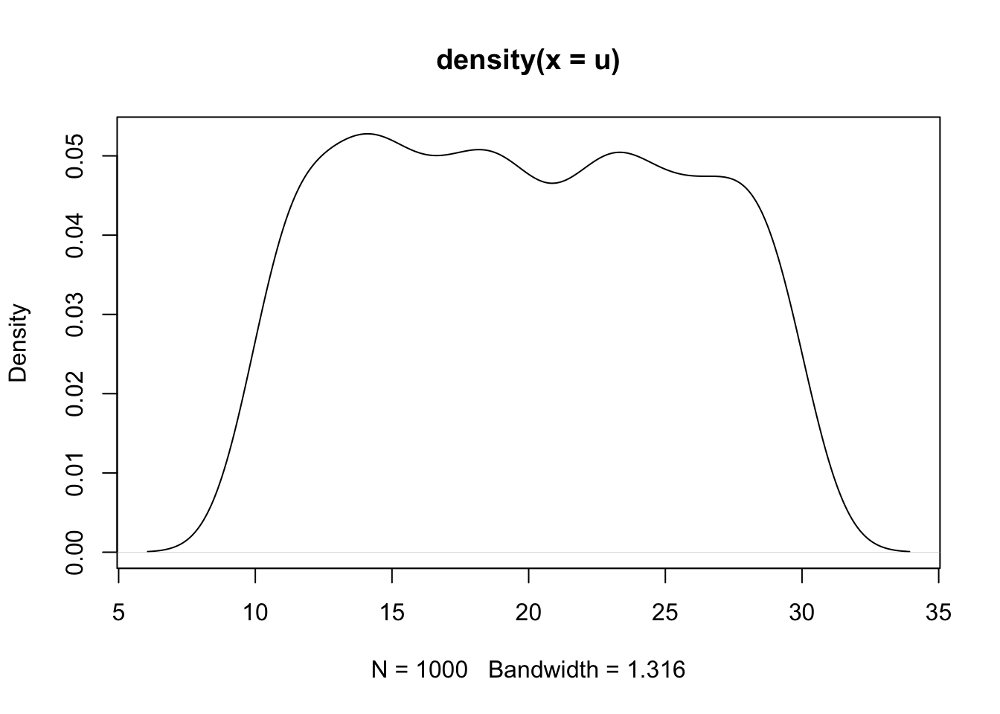
I order to obtaine the corresponding continuous - not numerically simulated - density, using the same definition (i.e. min=10 and max=30) and a similar range for display (5 to 35), we can use dunif() within the curve() function:
curve(dunif(x,min=10,max=30),5,35)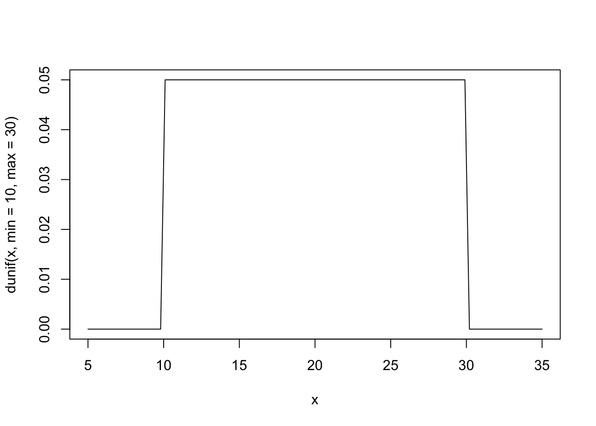
where we see more clearly that the probability to obtain a particular value with a uniform distribution is constant over the defined range and is zero otherwise.
The previous plot based on a numerical empirical generation runif() is of course less regular, and there was some smoothing at the borders of the graph due to the density being computed within a kernel (bandwidth). Yet, the kernel is necessary in practice for having some increment. In theory, the density can be defined over a point, i.e. for an infinitesimal delta of x (\(\delta x\)), but in practice you need a discrete interval (\(dx\)), hence the different ‘look’ of our two density plots: the continuous theoretical one using d...() and the numerical empirical one using density().
Mathematically, the density of a uniform distribution is given by (see help(dunif)) :
\[ \begin{align} f_X(x) &= \dfrac{1}{b-a} &\text{ for } a \le x \le b \\ f_X(x) &= 0 &\text{ otherwise} \end{align} \] where \(b\) is the maximum and \(a\) the minimum whereby the distribution is defined.
In our example we now see why the constant was at 0.05, i.e. (\(1/(30-10)\))
And can check it for any point x fed into dunif()
dunif(c(2, 10, 15, 20, 30, 55),min=10, max=30)
#> [1] 0.00 0.05 0.05 0.05 0.05 0.00For any continuous distribution, it is interesting to accumulate the probabilities along the x values so that this cumulative sum indicates the probability of randomly drawing a number that would fall below any given value. This is called the cumulative density function, aka cdf.
Similar to the density, there is both a numerical empirical way and a continuous theoretical way to get the cumulative density function in R, using respectively the ecdf() function or the p...() function corresponding to the distribution of interest.
With our empirically generated (sample) uniform distribution \(u\), we compute the empirical cumulative distribution function (ecdf) as follows:
ecdf(u)
#> Empirical CDF
#> Call: ecdf(u)
#> x[1:1000] = 10.007, 10.015, 10.048, ..., 29.977, 29.986
plot(ecdf(u))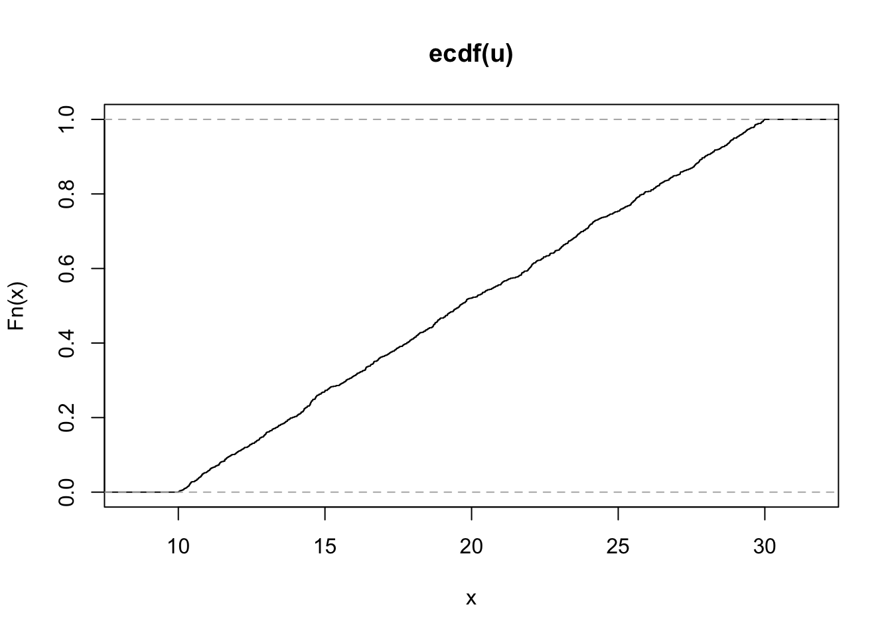
We can see that it is (almost) a straight line. Its slope is of course the density we have seen above. density() is the derivative of the ecdf() and the ecdf() the integral (cumulative sum) of density(). For every increment of x, we increase the probability of drawing a number below x by 0.05, up until the max (30) is reached.
Instead of simulating numbers or using an empirical sample, we can use the theoretical punif() function in this case to obtain the theoretical cumulative density function corresponding to our parameters.
curve(punif(x,min=10, max=30),5,35)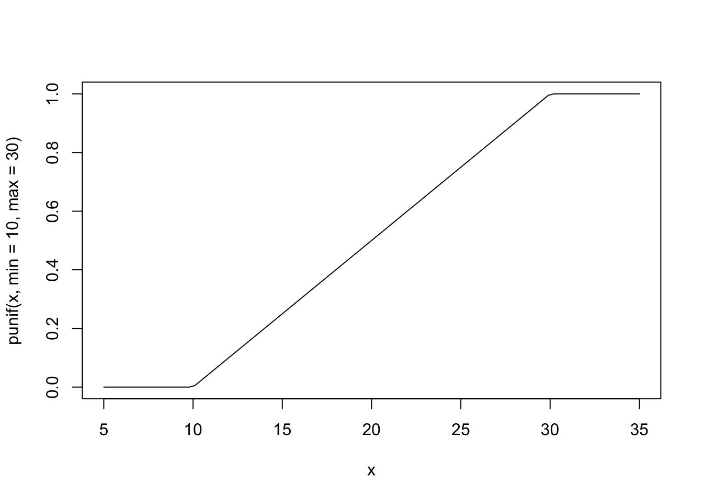
We see it is the theoretical continuous version of ecdf() applied to our vector \(u\).
Mathematically, the cumulative distribution function of the uniform is defined by: \[\begin{align} F_X(x) &= 0 &\text{ for }& x < a \\ F_X(x) &= \dfrac{x-a}{b-a} &\text{ for }& a \le x \le b \\ F_X(x) &= 1 &\text{ for }& x > b \end{align} \]
Instead of using the p...() function (similar for d...()) with a general x variable, we can supply a quantile (or a set of quantiles), in order to obtain the probability of drawing a number below this quantile.
With the uniform distribution and punif() it is very straightforward because the cumulative probability simply is the quantile as shown below
punif(q=c(0.01,0.25,0.5,0.75,0.99))
#> [1] 0.01 0.25 0.50 0.75 0.99
punif(min=50, max=200, q=c(100)) #the probability of drawing a number below 100 knowing the min and max are 50 and 200 and the distribution uniform is 1/3 (the range being 150 and 100 being 50 beyond the max)
#> [1] 0.3333333The last of the 4 R functions for distributions is the reverse of p...(), i.e. q...(), which provides the corresponding quantile for any given probability \(p\). It is again quite straightforward for a uniform distribution defined over the range 0 to 1 since the quantile is then the probability, and proportionally within the defined range for other uniform distributions.
curve(qunif(x,min=1000,max=10000))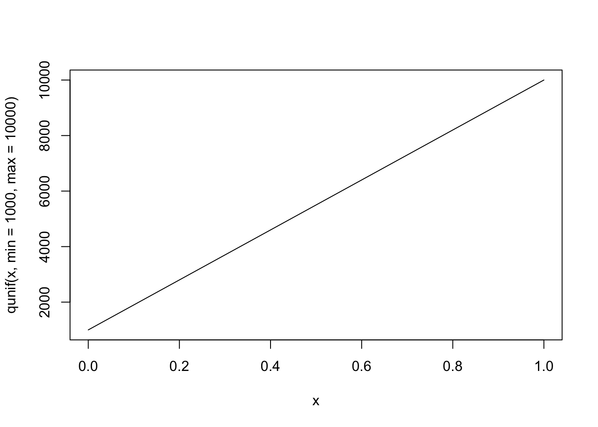
qunif(p=0.77,min=1000,max=10000)
#> [1] 7930The Normal or Gaussian distribution is the workhorse of statistics and the most used distribution. We have seen its general bell shape earlier.
A normal distribution is entirely defined by its mean and standard deviation, which we thus need to provide for generating examples.
A normal distribution is thus denoted by \[X \sim N(\mu, \sigma^2) \ \ \ \forall X \in R\]
where \(\mu\) and \(\sigma^2\) are the real and unknown mean and variance of the studied population. It is defined over the entire set of real numbers R.
Let’s generate a normal distribution and observe its histogram.
set.seed(101)
N<-rnorm(100000,mean=5,sd=1)
hist(N, breaks = 100)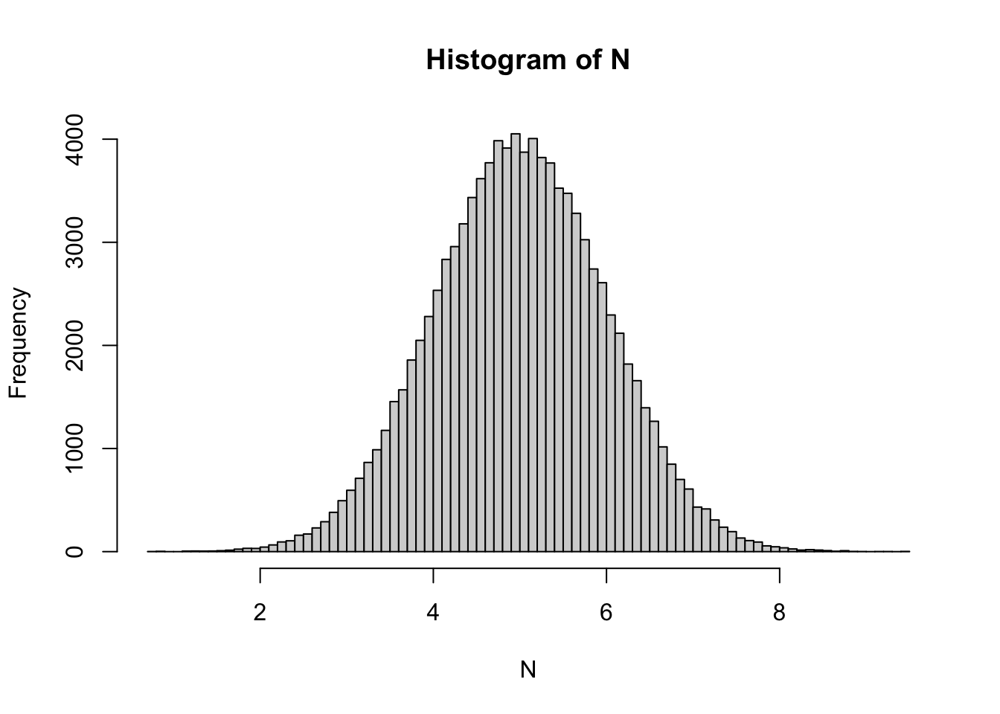
mean(N)
#> [1] 5.002881
median(N)
#> [1] 5.00018
sd(N)
#> [1] 0.9947701With a numeric example the characteristics are not exact, but the mean and standard deviations are close to those requested. We also see it is a symmetric distribution and the mean thus equals the median (approximately here). In other words half of the values are below the mean and the other half above.
Symmetry also means that the skewness (3rd moment) is close to zero. Note that its 4th moment (Kurtosis) is theoretically 3, but R takes out this value in its computation so the kurtosis of the normal distribution is 0, which is used as a reference. Again it is approximately given this is only a numerical example of it.
mean(N)
#> [1] 5.002881
median(N)
#> [1] 5.00018
e1071::skewness(N)
#> [1] -0.001284229
e1071::kurtosis(N)
#> [1] 0.004644777We can look at the impact of generating a smaller sample, to show how means, medians, skewness or kurtosis and the histogram vary quite a bit from the expected when the size of the sample decreases:
N10000<-rnorm(10000,mean=5,sd=1)
N1000<-rnorm(1000,mean=5,sd=1)
N100<-rnorm(100,mean=5,sd=1)
N10<-rnorm(10,mean=5,sd=1)
hist(N10000, breaks = 100, border=NA, col=rgb(1, 0.5, 1, 0.5))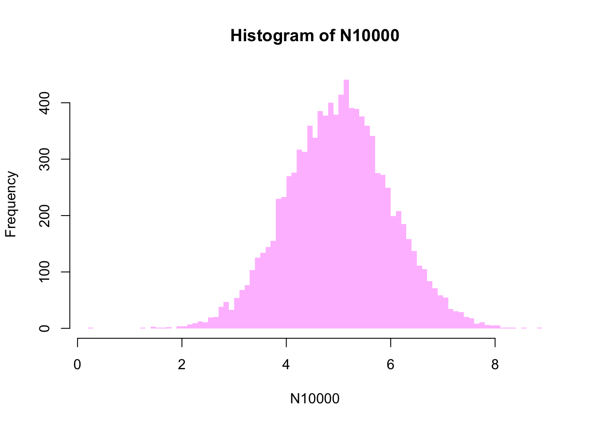
hist(N1000, breaks = 100, border=NA, col=rgb(1, 0.5, 1, 0.5))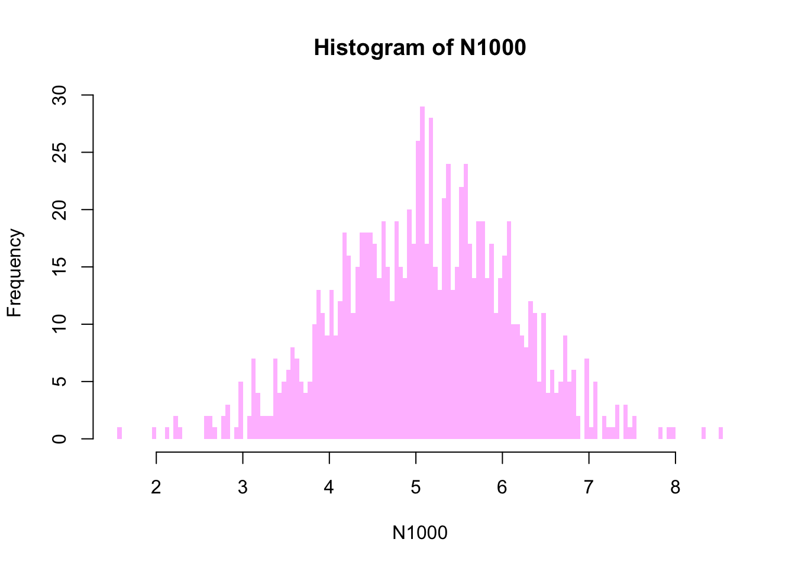
hist(N100, breaks = 100, border=NA, col=rgb(1, 0.5, 1, 0.5))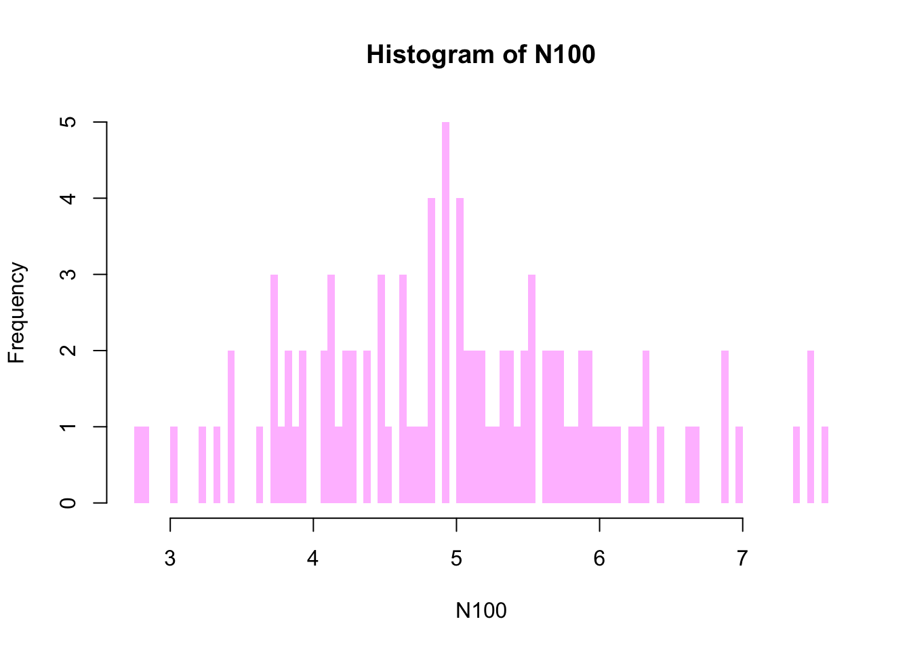
hist(N10, breaks = 100, border=NA, col=rgb(1, 0.5, 1, 0.5))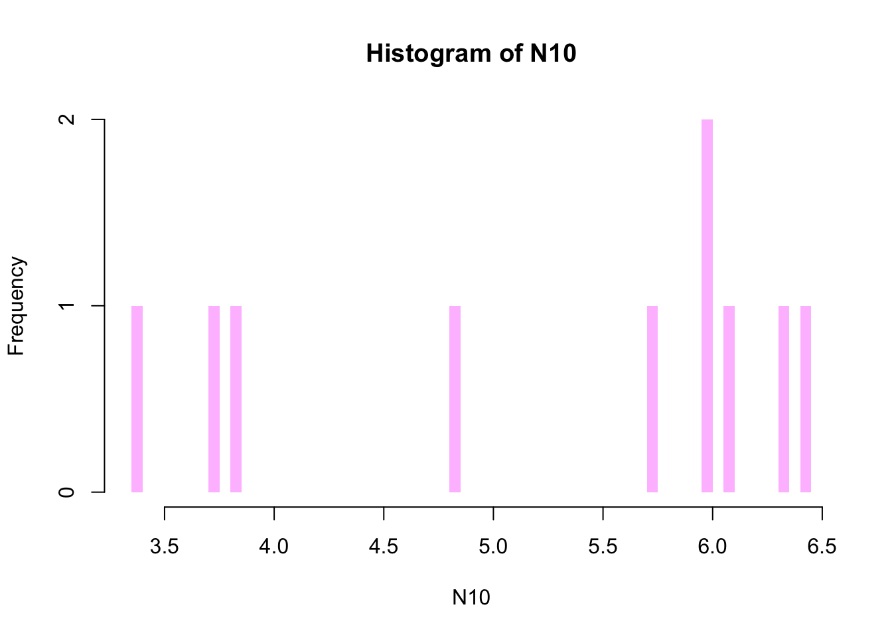
A key feature of the normal distribution is that approximately 68% of its values fall within one standard deviation from the mean (both side as it is symmetrical), 95% within two standard deviations, and 99.7% within three standard deviations. This characteristic is heavily used to make probability tests.
We know compute the empirical density for our sample, showing the previous histogram with large sample size was indeed bell-shaped (but not so much the small sample examples)
density(N)
#>
#> Call:
#> density.default(x = N)
#>
#> Data: N (100000 obs.); Bandwidth 'bw' = 0.08953
#>
#> x y
#> Min. :0.5144 Min. :0.0000007
#> 1st Qu.:2.8273 1st Qu.:0.0011045
#> Median :5.1403 Median :0.0258991
#> Mean :5.1403 Mean :0.1078749
#> 3rd Qu.:7.4533 3rd Qu.:0.2048571
#> Max. :9.7663 Max. :0.3981291
plot(density(N)) #The integral of the density being 1, overlaying on top of the histogram doesn't work because it depends on the heights of the bar which itself depends on the number of bars. See Crawley, p215 for such a manipulation or later with ggplot
plot(density(N10000), main="Varying sample size", col=rgb(1, 0.5, 1, 0.5), lwd=5,xlab="x")
lines(density(N1000), col=rgb(1, 0.5, 1, 0.5),lwd=3)
lines(density(N100), col=rgb(1, 0.5, 1, 0.5), lwd=2)
lines(density(N10), col=rgb(1, 0.5, 1, 0.5), lwd=1)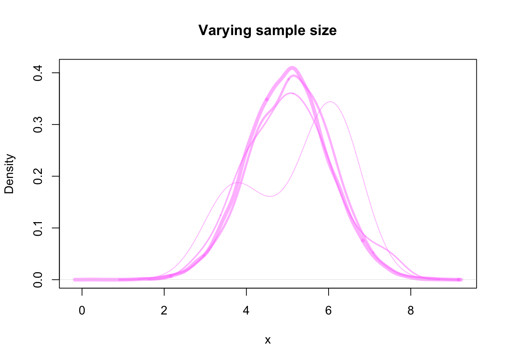
To obtain the corresponding theoretical function of the density, using the same mean and standard deviation, and along the same range of x values (0 to 10) for the graph, we can use dnorm() instead of the empirical function density(). Observe also that the density of a normal distribution at its peak, i.e. at the mean or median, is around 0.39.
curve(dnorm(x,mean=5,sd=1),0,10)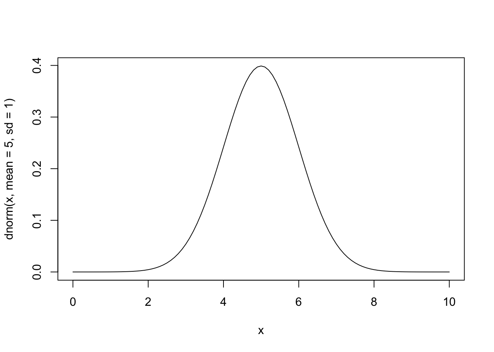
dnorm(5, mean=5,sd=1)
#> [1] 0.3989423Mathematically, the density of a norma distribution is given by the following, which is used within dnorm() (see help(dnorm)) :
\[f(x) = \dfrac {1}{\sqrt{2 \sigma^2 \pi}} \exp{(- \dfrac{1}{2} \dfrac{(x-\mu)^2}{\sigma^2})}\]
In the following, we play with the two defining parameters, mean and standard deviation, to show how each impact the shape of the distribution while keeping the second parameter constant:
curve(dnorm(x,mean=0,sd=1),-5,5, lty=1)
curve(dnorm(x,mean=-2,sd=1),-5,5, lty=2, add=TRUE)
curve(dnorm(x,mean=1,sd=1),-5,5, lty=3, add=TRUE)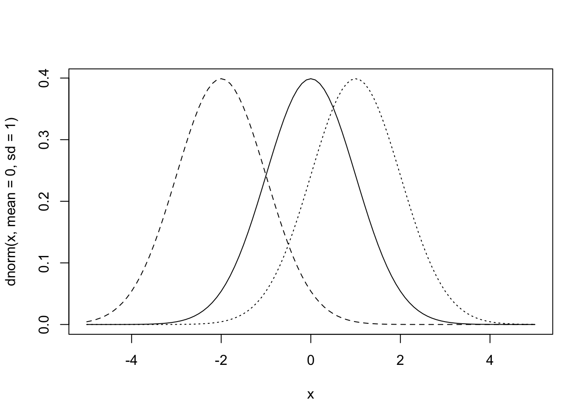
curve(dnorm(x,mean=0,sd=1),-5,5, lty=1, col="blue")
curve(dnorm(x,mean=0,sd=0.7),-5,5, lty=2, col="blue", add=TRUE)
curve(dnorm(x,mean=0,sd=2),-5,5, lty=3, col="blue", add=TRUE)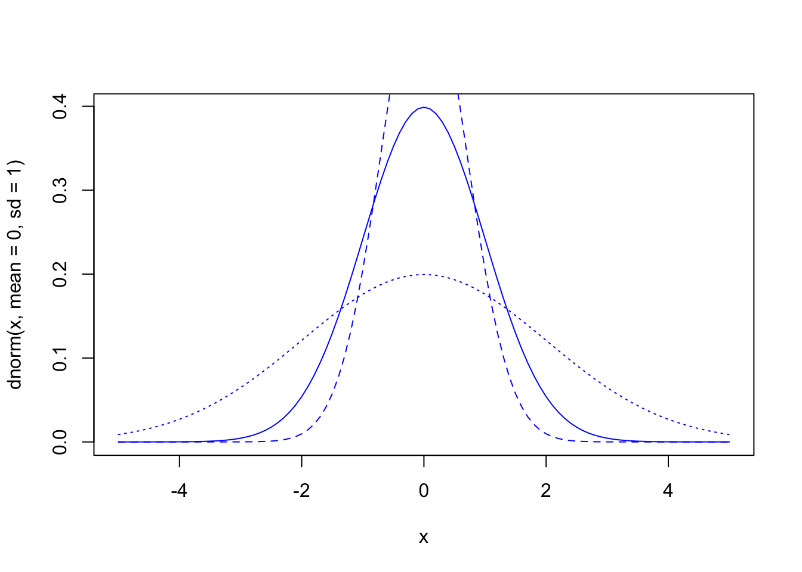
The general shape is not influenced by the mean as the distribution is simply translated along x. When the standard deviation increases, as expected, the distribution is flatter but still around the same mean.
If we generate two new (large) samples with a different standard deviation, we see the flattening. However, the shape is still a bell shape and the kurtosis will not pick the difference!. The peakness referred to by the kurtosis is one that is relative to the corresponding normal distribution (thus knowing its variance).
set.seed(101)
Z<-rnorm(1000000,mean=0,sd=1)
Flat<-rnorm(1000000,mean=0,sd=3)
plot(density(Z))
lines(density(Flat))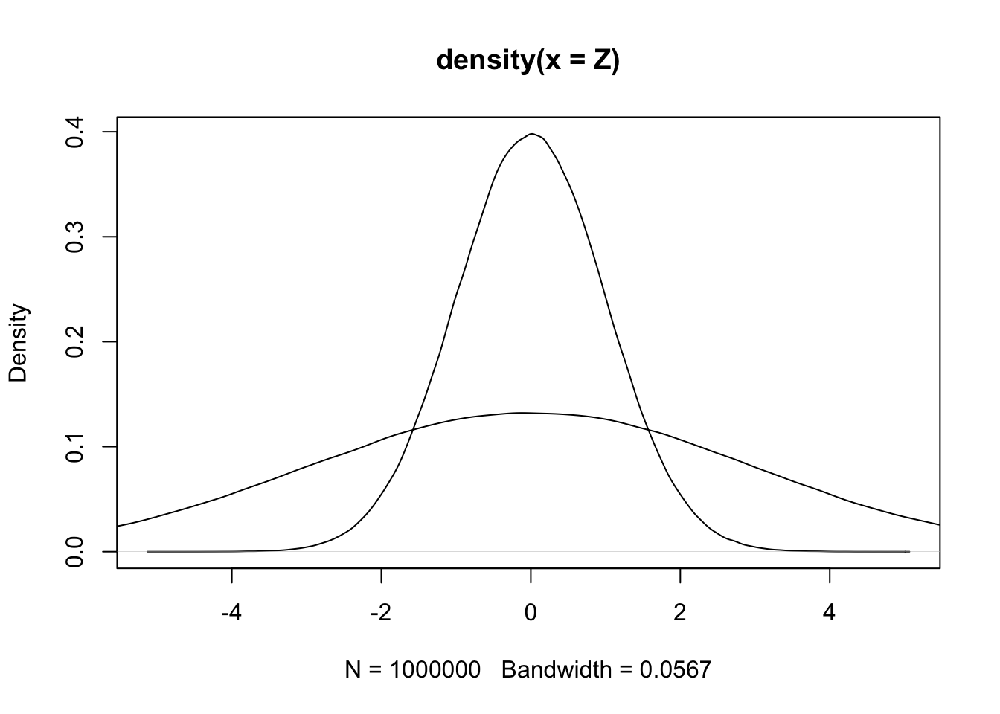
kurtosis(Z)
#> Error in kurtosis(Z): could not find function "kurtosis"
kurtosis(Flat)
#> Error in kurtosis(Flat): could not find function "kurtosis"We know explore graphically and with the function dnorm() the other property of the normal distribution by which we know that in a normal distribution, the range of values situated - + - 1 standard deviation from the mean represents 68% of the data - + - 2 standard deviations from the mean represents 95% of the data - + - 3 standard deviations from the mean represents 99.7% of the data
curve(dnorm(x, 0, 1), col = 'green', lwd = 8, xlim = c(-3, 3), main = 'Density function of X ~ N(0,1)\n Intervals', ylab = 'f(x)')
curve(dnorm(x, 0, 1), add = TRUE, col = 'gold', lwd = 5, xlim = c(-2, 2))
curve(dnorm(x, 0, 1), add = TRUE, col = "red", lwd = 2, xlim = c(-1, 1))
abline(v = 0, col = "grey", lty = 1)
abline(v = c(-1, 1), col = "red", lty = 3)
abline(v = c(-2, 2), col = "gold", lty = 3)
abline(v = c(-3, 3), col = "green", lty = 3)
legend("topleft", lwd = c(2,5,8),
legend = c("68% in [ mu +/- sigma ]",
"95% in [ mu +/- 2*sigma ]",
"99.7% in [ mu +/- 3*sigma ]"),
col = c("red", 'gold', 'green'))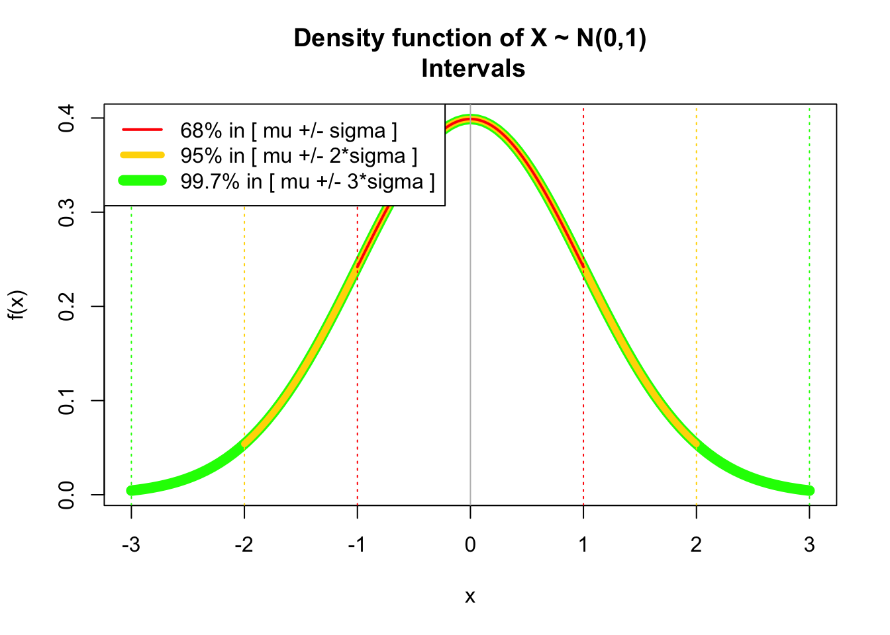
curve(dnorm(x, 0, 1), col = 'green', lwd = 8, xlim = c(-2.58, 2.58), main = 'Density function of X ~ N(0,1)\n Intervals', ylab = 'f(x)')
curve(dnorm(x, 0, 1), add = TRUE, col = 'gold', lwd = 5, xlim = c(-1.96, 1.96))
curve(dnorm(x, 0, 1), add = TRUE, col = "red", lwd = 2, xlim = c(-1.645, 1.645))
abline(v = 0, col = "grey", lty = 1)
abline(v = c(-1.645, 1.645), col = "red", lty = 3)
abline(v = c(-1.96, 1.96), col = 'gold', lty = 3)
abline(v = c(-2.58, 2.58), col = 'green', lty = 3)
legend("topleft", lty = 1, lwd = c(2,5,8),
legend = c("90% in [ +/- 1.645 ]",
"95% in [ +/- 1.96 ]",
"99% in [ +/- 2.58 ]"),
col = c("red", 'gold', 'green'))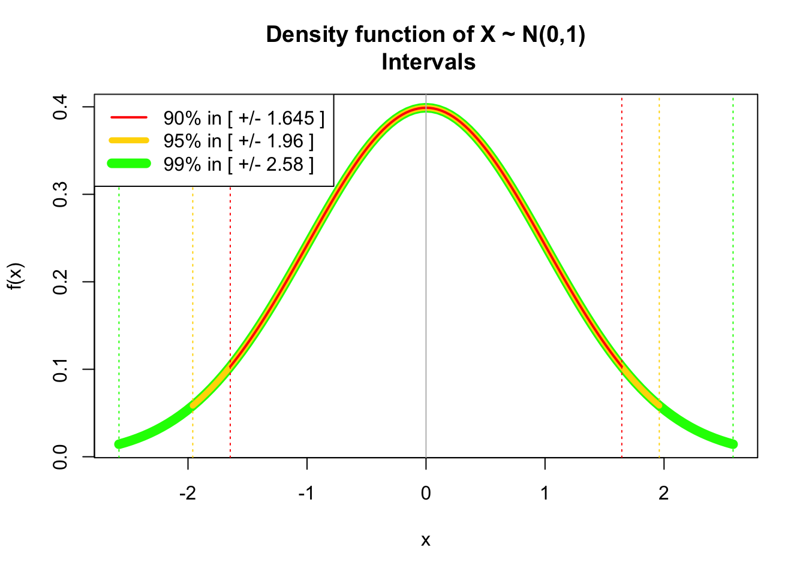
Similar to the case of the uniform distribution, we can also look at the cumulative probability. Theoretically we use pnorm(), which it the equivalent of the uniform punif(). Empirically we can use the ecdf() function again since it makes no assumption on the distribution (for it is used to explore empirical material).
curve(pnorm(x),-4,4) #theoretical (unit normal)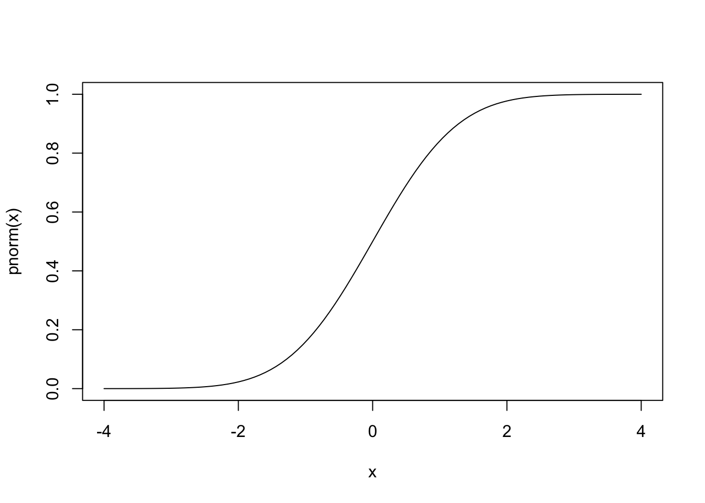
N<-rnorm(100)
plot(ecdf(N)) #sample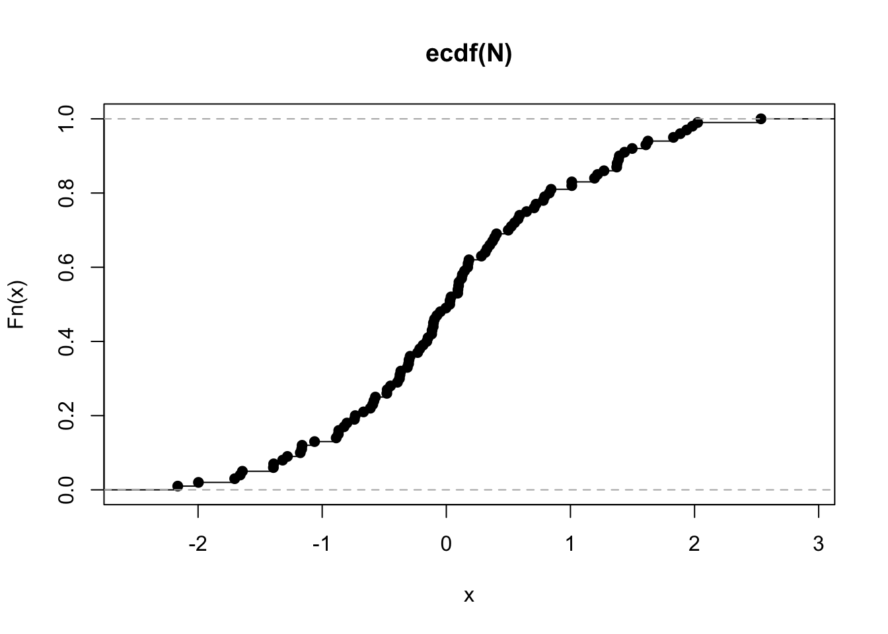
We see that the bell shape of the density (from dnorm()) is the derivative of an S-shaped function. The probability of drawing a number below a certain value is not constantly increasing as in the case of the uniform distribution. Rather, the probability grows slowly for lower values, then very quickly around the mean where the mass of data is found, then slows downs and plateau again for higher values.
Mathematically, the cumulative distribution function of the standard normal distribution is the integral of the probability distribution \(f(x)\) defined earlier. It is often denoted by \(\Phi(x)\) but has no closed solution and thus statistical software compute values numerically.
plot(x, pnorm(x, 0, 1), type='l', col=2, ylab = 'F(x)',
main = 'Cumulative Distribution Function of N(mu ; 1)')
#> Error in eval(expr, envir, enclos): object 'x' not found
lines(x, pnorm(x, 2, 1), col='darkorange')
#> Error in eval(expr, envir, enclos): object 'x' not found
lines(x, pnorm(x, 4, 1), col='gold')
#> Error in eval(expr, envir, enclos): object 'x' not found
legend("topleft", lty = 1,
legend = c("mu = 0", "mu = 2", "mu = 4"),
col = c(2, 'darkorange', 'gold'))
#> Error in (function (s, units = "user", cex = NULL, font = NULL, vfont = NULL, : plot.new has not been called yetplot(x, pnorm(x, 0, 1), type='l', col=2, ylab = 'F(x)',
main = 'Cumulative Distribution Function of N(0 ; sigma^2)')
#> Error in eval(expr, envir, enclos): object 'x' not found
lines(x, pnorm(x, 0, 2), col='purple')
#> Error in eval(expr, envir, enclos): object 'x' not found
lines(x, pnorm(x, 0, 4), col='blue')
#> Error in eval(expr, envir, enclos): object 'x' not found
legend("topleft", lty = 1,
legend = c("sigma = 1", "sigma = 2", "sigma = 4"),
col = c(2, 'purple', 'blue'))
#> Error in (function (s, units = "user", cex = NULL, font = NULL, vfont = NULL, : plot.new has not been called yetWe can also use pnorm()to verify the key property of the normal distribution, that 68 % of the values fall in between -1 and +1 standard deviation from the mean, and respectively 95% and 98.7% for 2 and 3 standard deviations.
1-(pnorm(-1)+(1-pnorm(1))) #1 minus the sum of the probability of being below -1 and being above 1)
#> [1] 0.6826895
1-(pnorm(-2)+(1-pnorm(2)))
#> [1] 0.9544997
1-(pnorm(-3)+(1-pnorm(3)))
#> [1] 0.9973002Of course pnorm()can be interrogated for any normal distribution, i.e. with other means and standard deviations. For example, suppose we know the mean of GDP /capita for all countries in Europe is 40 000 euro on average with a standard deviation of 20 000 and we have indication that the distribution is normal. What is the probability of finding a country below the GDP of Latvia, i.e. 22 000 euro per capita or Luxembourg 100 000 euro per capita?
pnorm(22000,mean=40000,sd = 20000)
#> [1] 0.1840601
pnorm(100000,mean=40000,sd = 20000)
#> [1] 0.9986501We see that about 18.4% of the countries will have a GDP lower than Latvia and 99.9% will be lower than Luxembourg.
The other way around, we can ask what would be the GDP/capita for a country to be in the top 1% or top 10% using qnorm()